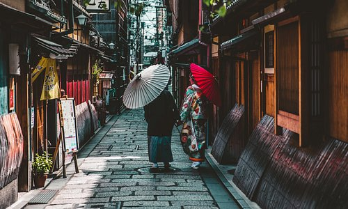
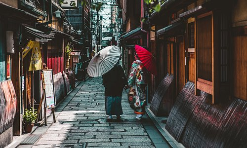

Explorez :Tokyo
 

Une ville sans cesse animée et pleine de contrastes saisissants
Avec ses gratte-ciel futuristes, sa scène gastronomique inégalée et sa vie nocturne endiablée, Tokyo suscite une véritable poussée d’adrénaline. Cette vaste ville aux multiples facettes est réputée pour être à la pointe du progrès, mais ses anciens temples bouddhistes, ses salons de thé d’époque et ses jardins paisibles offrent une évasion sereine et un rappel émouvant de la longue histoire de la ville. Et pour les plus curieux, les petits plaisirs de Tokyo (les endroits secrets où l’on trouve des ramens, les allées commerçantes, les lieux de musique relaxante) se cachent souvent à la vue de tous.
Tokyo : commencez à organiser !
Créez un voyage pour enregistrer et organiser toutes vos idées et les visualiser sur une carte.